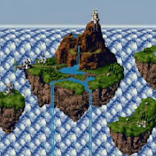
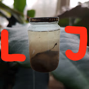

Play this video while going through this page!
| Video Name | Creator | Creator Profile | Video Description | Video Length |
|---|---|---|---|---|
| Important Videos Playlist | kierancaspian's channel | A playlist of 312 short videos epitomizing "internet humor". A necessary watch for any new internet user. | ~1:11:39 | |
| The Batman Arkham Series | Luke Stephens' channel | A thorough analysis of the Batman Arkham games trilogy, from gameplay and story, to character development and atmosphere. | 3:24:53 | |
| Introduction to Competitive Pokemon | WolfeyVGC's channel | Part 1 to a 3 part series teaching fundamental concepts to excel in competitive Pokemon. | 1:04:22 | |
| Making a Home Server | Linus Tech Tips' channel | An inspiring video on converting an old PC or laptop to act as a home server. | 11:06 | |
| Beserk Soundtrack Analysis | Internet Pitstop's channel |  | A video analyzing and discussing the Berserk 97 Soundtrack Legendary Wind Sword. | 34:20 |
| rain | JackStauber's channel | One of my favorite artists, I love his unique style and animation while exploring difficult subjects. | 0:35 | |
| Samsung Z Flip 3 Teardown | JerryRigEverything's channel | A thorough examination of the innards that compose the Samsung Z Flip 3. I work in electronics repair, and recently got to work on this beautiful phone. | 9:38 | |
| Isopod Colonies are Fun | Life in Jars? channel |  | "I'm working with the species Porcellio scaber (common rough woodlouse). In this video I show you how to make a terrarium for an isopod colony and also how much fun and how interesting it is to have an isopod colony yourselves." | 10:54 |
| Weekly Pkmncast Podcast video | Pkmncast channel | In this podcast episode, Steve, Greg, and Will talk about the recent Pokemon Worlds event in London and the reveal of a potential pre-evolved form of the upcoming legendaries of Pokemon Scarlet and Violet. | 2:06:27 |